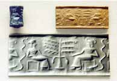

This is the sixth in a series of excerpts from an ongoing dialogue between Russell Lockhart and Paco Mitchell.
PM: Over the course of our dialogue, one psychological factor has been implicit from the beginning. We have used it liberally and described its operations, but have not yet brought it front and center. That is the factor of intuition. Taken in the sense of “instinctive knowing”, or—as Jung once described it—“perception by way of the unconscious”, I believe it deserves at least a mention in our conversation.
I have often thought—intuited, rather—that intuition is one of the oldest functions of the human psyche, one that we share with our animal brethren. I would even be comfortable placing intuition in the context of animal knowing. As a mysterious, archaic function, intuition has suffered a certain depreciation under the hegemony of the modern demand for rational thinking. With rigorous thinking we build the systems that control the world. Intuition, in contrast, is not so systematic. Since it governs the elusive flow of information that approaches consciousness from the side of the unconscious, it is not so readily controlled or manipulated as the products of systematic thought.
Intuition is unruly. Sometimes it hits the bull’s-eye, sometimes it is way off the mark. What we tend to forget is that intuition is a skill which requires development, perhaps in the same way that Zen archery requires “practice”—trying, yet not trying. I believe intuition exists as a potential aptitude in every human being. But unless it is valued and attended to— honed like a blade, we might say—it is liable to remain dull and ineffective. Thinking, in contrast, is inculcated in students from an early age. We are generally taught how to think, but not how to intuit. To a considerable extent, then, intuition ends up being a solitary craft, cultivated by the few.
And here’s the paradox: Even as I’m calling for more conscious development of intuition, I recognize that a widened popularity could be the death knell of the very thing I seek. You can imagine the fate of intuition in the hands of “experts” — research budgets, marketing campaigns, amazing new breakthroughs, etc.
As you have pointed out, Russ, we already seek to “commodify” the psyche—images, emotions, dreams. In this context, intuition is just another frontier to be conquered, another market to be developed, another “taste” to be acquired.
But one of the values of intuition is precisely that it violates the pathways of convention. It doesn’t behave. And its ultimate mysteriousness brings us close to a recognition of the Otherness within ourselves and beyond. This attitude—the respect for soulfulness in oneself, in one’s fellow creatures, in nature, in the cosmos, even—is probably more deeply engraved in us, more fundamental to our human being, than the lust for limitless exploitation.
Let me emphasize: I’m not saying a wide-spread cultivation of intuition will redeem the world. But I am suggesting this: Any redemptive forces that reach consciousness will come to us by way of the unconscious. And if we are to discriminate among the counter-tendencies presently stirring in the human psyche—in order to discern the redemptive, healing ones—we will need the help of well-honed intuition, and plenty of it.
Thus we might have a chance of pruning away some of the deadwood that overburdens us, and doing the difficult work of locating and feeding the healthy roots. But we must go to that root-level if we are to save the tree.
RL: One-way to go to the “roots of the tree” is to go literally to the roots of the words we use. Take “intuition” for example. It’s composed of two elements in- and -tuition. As is often the case when we begin to do this we are thrown a bit off guard. Even though it’s in plain sight, when was the last time you thought of “tuition” in relation to “intuition”? What does tuition have to do with this important function? Is there a “cost” we must pay? And probably no one “remembers” the meaning of tuition as “guardianship”. We can understand this better if we dig further into the roots of “tuition” where we soon come upon the elemental root, -teu. This root means “to look at”, “watch”, and “protect”. Our English words tuition, tutelage, tutor and intuition come from this root. You can see here in the words blossoming from this root something of the idea of learning. You talk about intuition being attended to and you can see that in the very root of the word itself.
Now how do we do this?
What would it mean to be under the tutelage of intuition—intuition as tutor? I think what this means is that the only way to develop intuition in the sense you describe is to pay attention to and be taught by intuition. You speak of intuition being a “solitary craft”. I was struck by your phrase and immediately noted the sense of craft as art, the sense of craftiness as cunning, and the image of craft as a vessel. Alongside this came the idea that dreams and intuition often have the same fate— that is to be ignored and neglected and devalued. This triggered an avalanche of peculiar notions: the cunning of dreams, the art of dreams, the craft of dreams, dreams as vessel. Then came the spontaneous image of being on the ocean in a small craft. This image “presented” itself and in that sense was like an intuition or dream. So, I became “student” to this image and put myself under its tutelage, to let the image tutor me. I think you can see right away that as soon as we try to “grasp” the image and try to “understand it” and try to “interpret it” we step away from that sense of image (dream or intuition) as tutor.
So instead of any of that, I watched and listened and “paid attention” to what the image would “say”. I was suddenly struck by an “awareness” of the ocean’s “surface” all about me. It was more than that simultaneously, there was an awareness of the vast “underneath”. That was the “language” that was presented. It’s hard to say what the next thing was that happened but it amounted to the idea or awareness that I was traveling on “the face of the underneath”. I was startled by “hearing” these words, if hearing it was. When a dream or intuition comes to the “surface” we are staring, as it were, into the “face of the underneath”. We are face to face with something “other”. Some of these things that surface will of course come from “just beneath”, while others will come from vast depths and present us with utter strangeness, just as happens when we see creatures from the deep ocean that are nearly incomprehensible. It’s in that “face to face” where we would be better off to think of ourselves not as masters but as students in need of tutoring.
PM: I love your notion of being “under the tutelage of intuition”, of being “tutored by the image”. Sounds like a simple idea, doesn’t it? But in fact it’s quite profound. And in the context of contemporary orthodoxy, i.e., the modern mind-set, I would even say it’s revolutionary.
There is still a widespread commitment to hard-headed realism, to debunking “myths”, to a strict avoidance of fanciful thinking. In such a climate, to become a follower of intuition and the spontaneities of the imagination, is to subvert the conventional power attitudes that have been so highly prized. In 1875, the English poet William Henley was able to write heroically: “I am the master of my fate: I am the captain of my soul”. In the context of those times, the words expressed a sentiment appropriate to the British Empire, perhaps. But your vision expresses a different sentiment, where “mastery” has little to do with mastery over one’s soul; it is rather a question of becoming a master in service to the soul.
One crucial detail: Such service, in order to be genuine, must be willing to proceed in the face of the unknown. This is what you sought, of course, in your etymological reverie. What began with a consideration of the word “intuition”, ended with your floating over the face of the “vast underneath”. Such a word-voyage into imaginal waters is in itself a colorful example of what Keats meant by “Negative Capability”.
Staying with poetic ambiguities, opening to dreams, seeing the world as a subject with a voice, attending to synchronicities, following intuition: In these and many other ways we unwind at least some of the “mental sclerosis”, the hardened attitudes with which we have become afflicted over the past few centuries—in heart, mind and imagination. A short poem by E. E. Cummings speaks to the restorative attitude you demonstrate in your work-play with words:
Audience to poet: “You know what you’re doing, don’t you?” Poet to audience: “Excuse me, I do what I’m knowing”.
RL: One can ask why this is so difficult. Is it because we have lost the natural playfulness of childhood? We don’t teach children to imagine or even to learn that most complex thing we call language. Children are naturally under the tutelage of intuition and imagination and dreams —until we teach them otherwise.
In our education system we mainly unlearn our children from some of the most crucial things of all. This is a terrible misfortune and I only hope it can be remedied before all semblance of connection to the rhizome we come with is washed away. I want to be optimistic. But in relation to this the words of that old Peter Yarrow song, “Greenwood” that Peter, Paul and Mary used to sing, keep haunting me:
If we don’t stop there’ll come a time when women With barren wombs will bitterly rejoice With breasts that dry and never fill with promise Gladly they’ll not suckle one more life Is this then the whimper and the ending? The impotence of people raised on fear A fear that blinds the sense of common oneness Common love and life or death are here If we do these things in the greenwood. What will happen in the dry?
It was Nietzsche I think who put his finger on the key idea: That for most people, any explanation is better than none. This drive, he said, is conditioned and excited by fear. It is that fear in one version or another, the fear of the unknown, of uncertainty, of ambiguity, all those things young Keats was referring to in his notion of negative capability: that fear is at the root that leads us astray from the roots we need. In 1933, a time not unlike our own, Franklin Roosevelt said, “...the only thing we have to fear is fear itself”. He was referring to the economic times, but the idea is much more pervasive and is not limited to bad times. We are equally misled by the fear of the unknown, really the fear of the future, at all times—it is just that sometimes we don’t notice it as much but its cost is always dear. That question, “What will happen in the dry”, is at the root of your concern for the tree you spoke of earlier. I fear the tree is us.
PM: Yes, it’s true: The tree is us. And I like the way you constructed that sentence, placing the tree in first position, then us, as if to say: “We grow out of the tree”. The Tree symbolizes a fundamental, a priori condition of our lives, which is why it played a central role in the Garden of Eden story, that fantasy of mythic origins. But the image of the sacred tree was already ancient by the time the Book of Genesis was written, having figured prominently on many Mesopotamian cylinder seals—stone or fired-clay cylinders with figures carefully carved into them.

When rolled onto a slab of fresh clay, the cylinder left impressions of the carved figures—often showing the goddess surrounded by trees and animals. We didn’t exactly lose those mythic images when the Bible was written, but we did alter the valence of the images themselves and what they refer to, downgrading and demonizing the earthy goddess and natural life—the old values—in favor of a distant sky god and a more mental, etherealized conception of spirit and divinity.
The examples you cite above underscore the importance of your image of the rhizome, a mysterious, underlying structure and process— as much psyche as physis, for all we know—in whose life we all participate, and out of which we grow. Rhizome, root and tree, of course, are related symbolic metaphors. If, out of fear, we choke off the life-sustaining waters from our own depths, or sterilize the nutrients of the inner soil, what becomes of life? It dries. And if conditions don’t change, sooner or later it dies. Bright sun and air alone do not avail. The moist darkness is just as important as the dry light.
Peter Yarrow’s unflinching song, “Greenwood”, was haunting indeed. The message was clear: “If we don’t stop, we’ll be sorry”. It reminds me of the importance of facing the facts. With all the news of current and impending crises today—especially in our relations to the natural environment— many people find the temptation to look away overpowering. They would “rather not think about it”. Jung’s references to conscious sacrifice, which implies a willingness not to shrink from unpleasant facts and images, certainly apply here. Any therapy patient facing the “hot bath” of analysis knows what this feels like. The ego would prefer to sail untroubled over fearsome waters, but the deeper life—the vast underneath — calls us out of our complacency. Robert Jay Lifton spoke of the difficulty of facing the “intolerable image”—referring to the implications and consequences of nuclear weapons. A collective unwillingness to face the intolerable image results in what he calls widespread “psychic numbing”. How are we to deal with the fear that hampers us if we are psychically and emotionally numb?
Interesting that you placed “the children” and fear-riddled adults in the same context. If children are “naturally under the tutelage of intuition, imagination and dreams”— until we drum it out of them—their example provides one antidote for the deeply desiccating fearfulness that infects our time. Speaking of children, novelist Dorothy L. Sayers wrote an interesting variation on the Biblical saying:
“Except ye become as little children, except you can wake on your fiftieth birthday with the same forward-looking excitement and interest in life that you enjoyed when you were five, ye cannot enter the kingdom of God. One must not only die daily, but every day we must be born again.”
She could have said, “Except ye live with an awareness of the rhizome”.
Intuition easily connects these four imaginal realms—the Biblical “Kingdom of God”, your modern metaphor of the “rhizome”, the image of “little children” and the primordial symbol of “the Tree”. Not that anything is “explained” by such intuitive connections—rather, something “other” in me sees the overlapping parallels in those four ideas. In the psychic depths to which all these imaginal places refer, there is a shifting fluidity that defies final definitions. And yet the imaginal presences that finally rise to consciousness, eventually to inform a culture, “want” to be fixed... for a while at least, the way a bronze caster’s metal “wants” to be melted and poured into new molds, worked and finished. Then at some point, the metal “wants” to be melted down all over again to suit the needs of a different age. Most Greek bronzes were melted down for other uses by the Romans; and a wedding ring today might contain at least a few molecules of Egyptian or Inca gold.
One reason for the underlying fear you refer to may be the fact that we are so deeply in need of transformation, a new dispensation. We need to fill our well-bucket to the brim with fresh images by means of which we can meet the future. In fact, the future comes to us in the form of images, since it has not yet assumed tangible shape. The more tightly and hysterically people cling to worn-out images out of fear, the more they block the future. Dreams of blocked plumbing might echo this condition.
I am aware that a discerning balance between old and new is required. In one sense, the future has to be chosen, just as one has to choose which old forms get tossed into the crucible for melting—transformation— and which ones get salvaged, modified or restored. It’s a harrowing enough process when carried out on an individual level. How much more harrowing it is, then, when it occurs on a global scale!
We are faced with troubling, intolerable, melancholy-inducing images on all sides, to be sure. Yet there’s a strange consolation in facing them, for, as a French philosopher once said, “Melancholy can open a secret door to the sublime”.
Throughout our dialogue you have been demonstrating Keats’ Negative Capability, as a way to access “the rhizome”. This experience may be simple to undertake, but it is not necessarily cheap, given the context of our time. It requires a steep tuition payment, if only in the form of the courage required to leave the safe decks and cabins of the ocean liner that is our collective vessel. One has to lower oneself, step into the small, tender craft rocking on the deep waters, and then peer into the depths. There’s no telling what will rise to the surface to meet one’s gaze. But frankly, I’m more afraid of the consequences of not looking into the depths, than I am of the images that might come to light.
RL: To paraphrase Thorton Wilder, “there’s a bridge between the known and the unknown, and that bridge is curiosity”. Far too often, for far too many, for far too long, the bridge is fear. This fear will not “stop” the future, of course, but it will block that first of Leonardo Da Vinci’s life principles: curiosità. For Da Vinci this meant “seeking the truth”. When fear leads and dominates, truth-seeking is a casualty, and we become as well, victims of the failure of truth-telling at all levels. Engines of power, of whatever stripe—political, corporate, religious, institutional, or individual— count on this, and organize their structures and machinations to subvert curiosity, and deflect fear into hope.
Why is this?
I believe it is because curiosity inevitably leads to action, while hope leads to paralysis. (Recall Yarrow’s line, The impotence of people raised on fear.) Moreover, curiosity sparks the imagination, while hope tends to hunger after states already known. Etymologically, curiosity is rooted in care and cure; hope is rooted in hollow. For these reasons, I am no fan of the politics of hope, nor the attitude toward dreams as agents of fulfilling wishes. The linking of “hopes and dreams” keeps us bound only to what we know rather in the manner of Alice’s sister. What is needed is the spirit of Alice herself as she stepped through into the looking-glass world. To me, dreams and imagination and the art that flows from these sources, are not agents of hope, but agents of change, bearing hints and intimations of the future, of things we do not already know, but intuitively desire.